Last fling before the ring
Le puedes hacer click a las imagenes
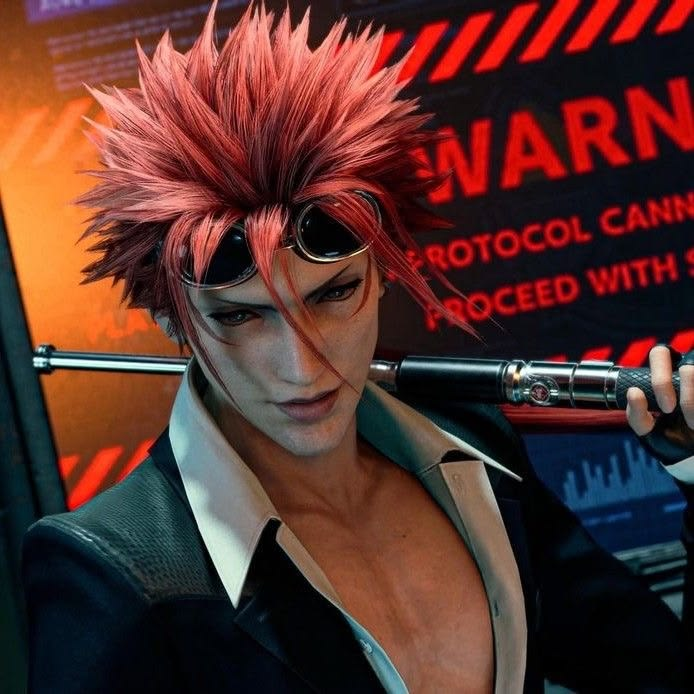
Primero en la lista, no importa que me case, él es el original, el oficial, no hay necesidad de explicar porque está aquí. Te quiero mi rey.
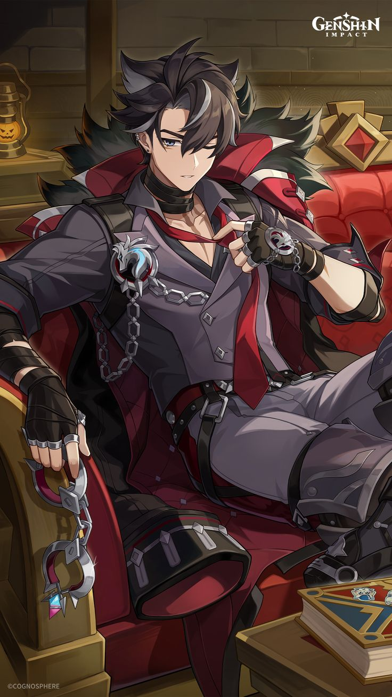
Otro más que no podía faltar, en una oleada de hombres de los que yo solo admiraba sus cuellos, llegó él con ese pechazo y brazotes (en base a mis estandares, ya sé que para vos es solo un twink nivel 3)
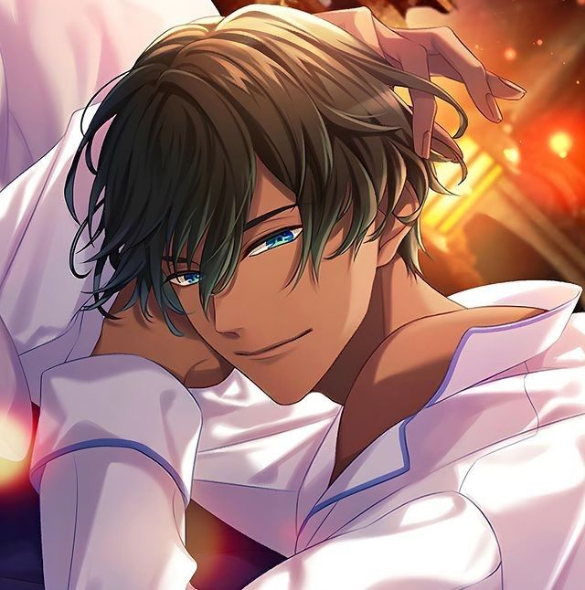
Te amo Simeon, en un dating sim de demonios, te elegí a tí.
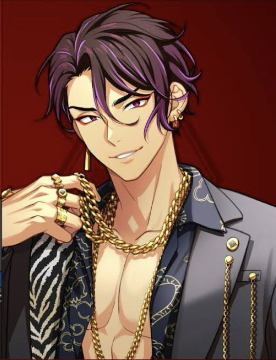
Cambié su descripción 100 veces, a veces me gusta y a veces no, primero lo incluí porque su pelo combinaba con la estética, ya no porque cambié los colores pero bueno.
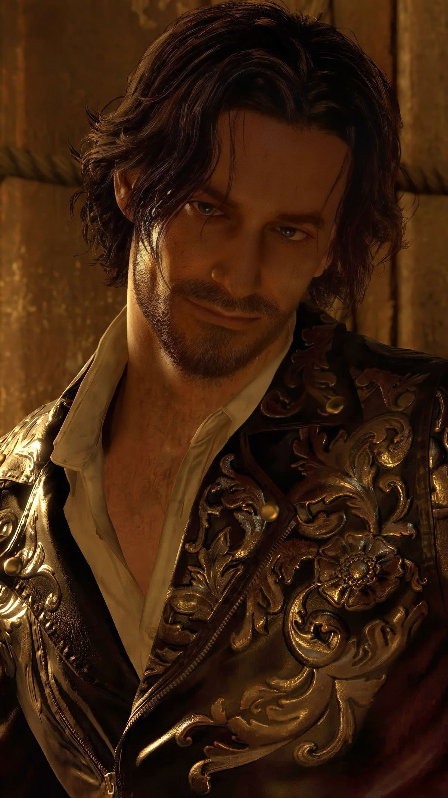
Otro difunto en mi lista, no era intencional, me acabo de dar cuenta, vamos a fingir que recibió atención médica. Te quiero chaval, eres la hostia.
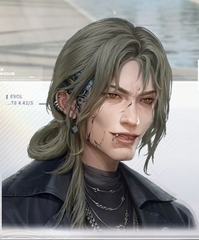
No podía faltar, no sé que decir, pero él era necesario. Todo love and deepspace me falló, menos tú.
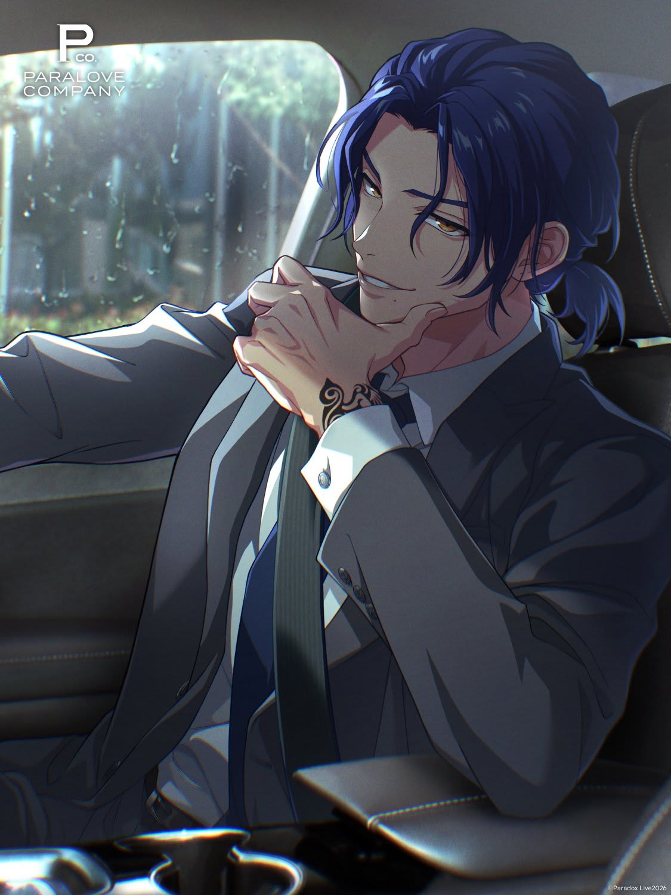
Después de tanto rechazo a pesar de que me atraía físicamente, lograste superar las pruebas. Te tengo ganas, Yohei. Te quiero.>
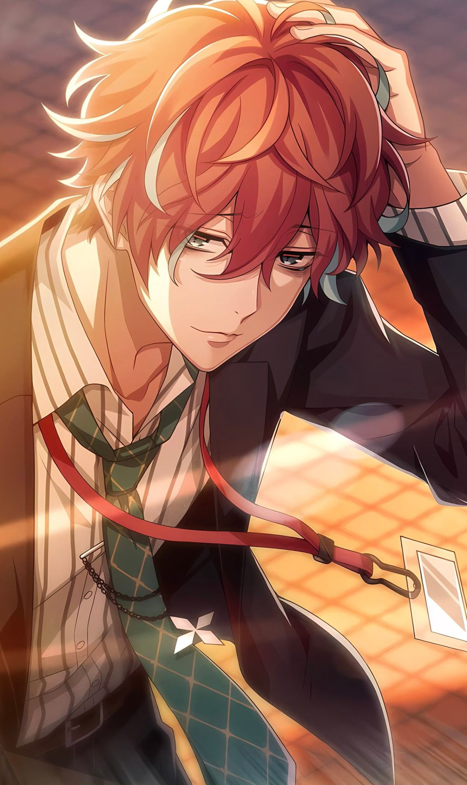
Primero no planeaba poner a los mansitos aquí, pero también quise incluir solamente a los mayores de 21 (no sé porqué) y me quedé sin ideas, así que, hola Doppo. Fuera de joda, se lo merece, me gusta Doppo desde que soy una niña, él hizo lo que Caleb no, durar.
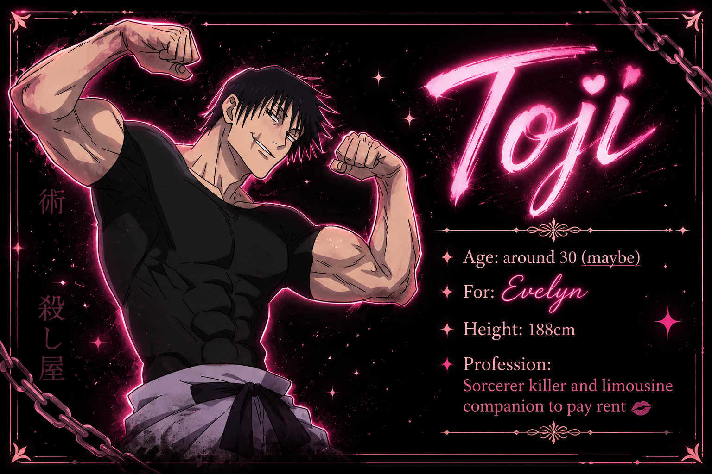
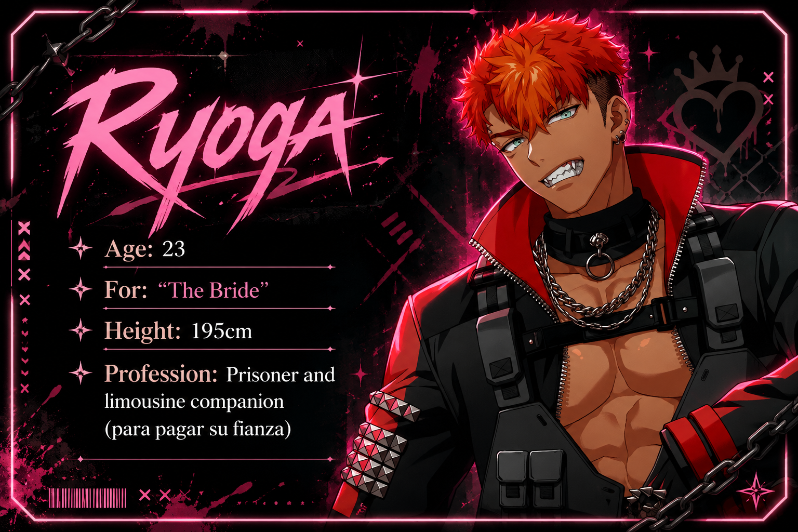
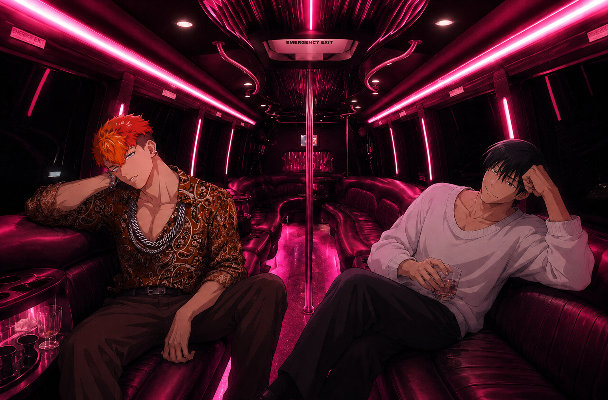
Ahora me da risa que Toji no está vestido muy de fiesta, pero bueno. También el grandote perruno, me empezó a gustar después de que vi una foto de él con un cachorrito, me da miedo y me atrae, es morbo. No estoy orgullosa de ser una fácil.
No son las canciones enteras, por si acaso, me olvidé de ponerlo en este vídeo.
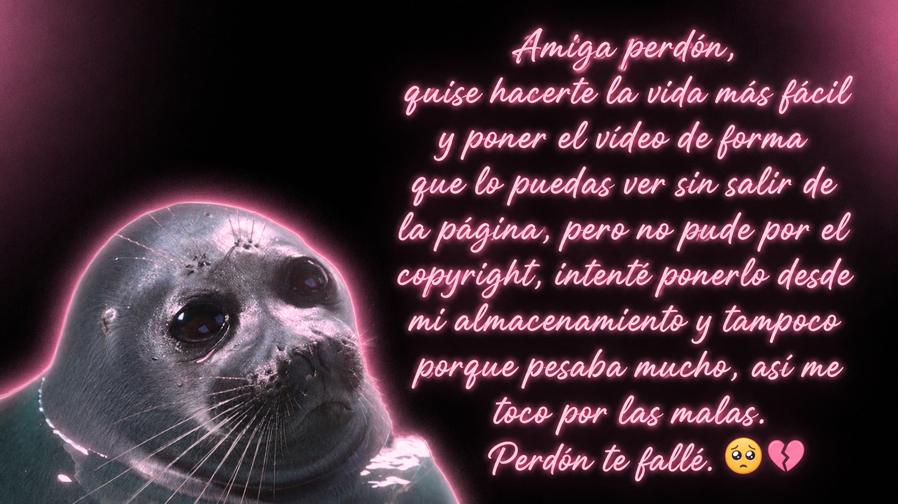
Listen now 😈For la nostalgia, pasaremos la fiesta de despedida de soltera en el penthouse que Jyn y Lyn adquirieron en su adolescencia. Un espacio amplio y con suficientes habitaciones para que se diviertan todos. El que rompe algo, lo paga. Muchas gracias.
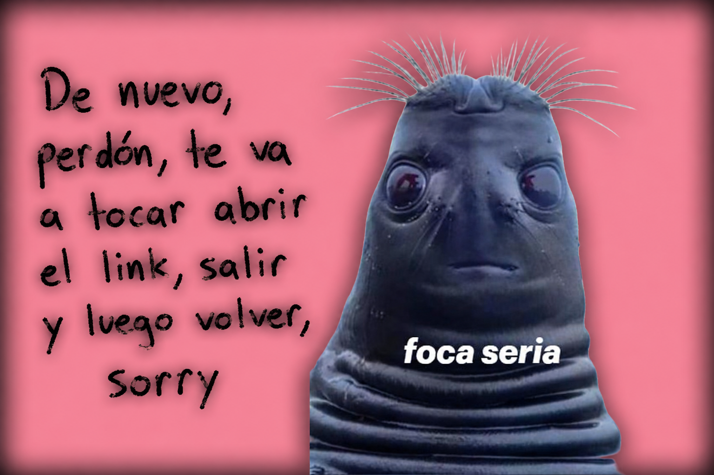
Listen now 👿Me duele muchisimo dejar de ser soltera, pero agradezco a mis amantes, a mi dama de honor Evelyn, que nunca me detuvo en mis malas decisiones, esa es una mujer que admiro mucho, cuando crezca quiero ser como ella. También gracias a Kayla y a Miku por aliviar mi dolor, los quiero. Esto no es un adiós, esto es un "hasta pasado mañana después de la boda (fingí que terminé esto antes del 13, que me acabo de dar cuenta de que estoy haciendo esto exactamente una semana después de mi boda)" a mis machos.
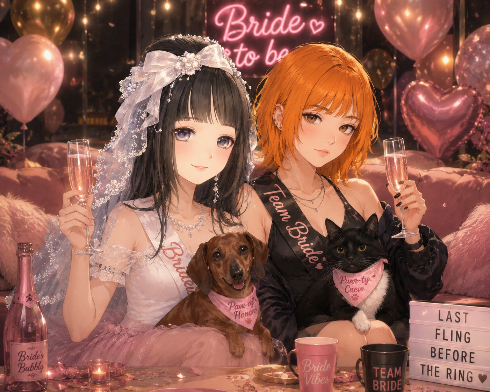
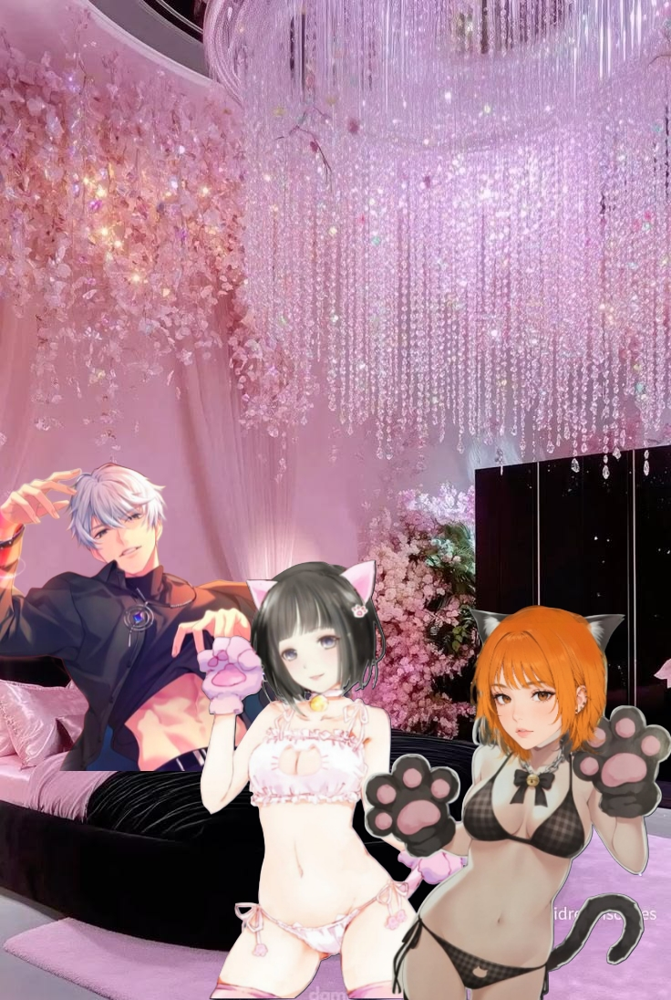
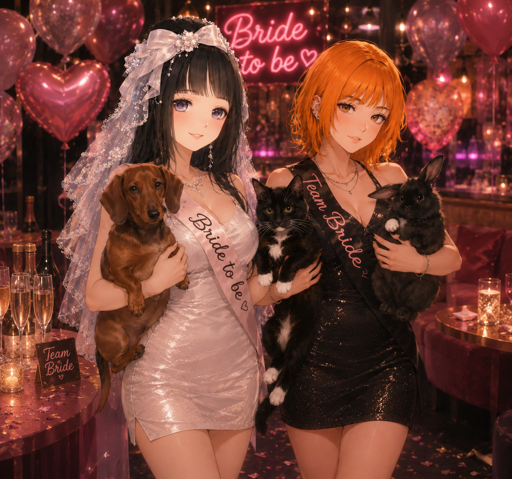
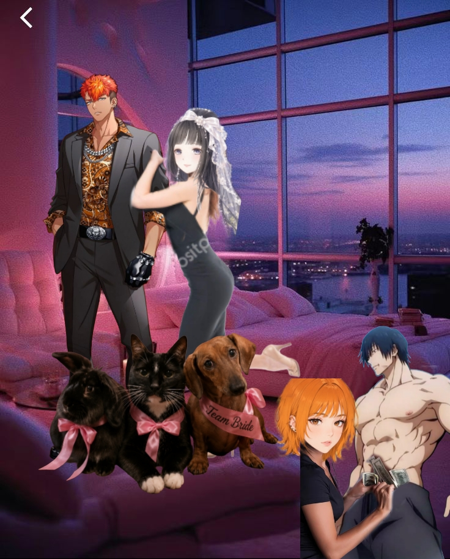